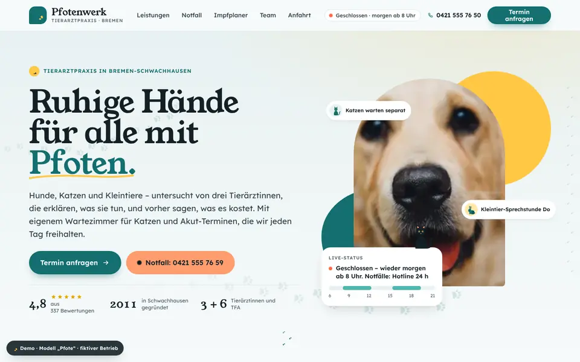
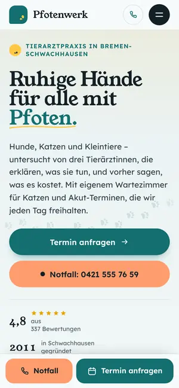

Case Study 18 / 30 · Gesundheit
Tierarztpraxis Pfotenwerk
Modell „Pfote“
Freundliche Tierarzt-Seite mit Notfall-Wegweiser, Impfplaner und Patientenkarte zum Selbstanlegen.


Ausgangslage
Eine erfundene Tierarztpraxis in Bremen-Schwachhausen. Tierhalter kommen oft mit einer konkreten Sorge: Ist das ein Notfall, wann ist die nächste Impfung dran, was passiert beim ersten Besuch. Die Seite soll diese Fragen sofort beantworten, Sprechzeiten live zeigen und neue Patienten ohne Hürden aufnehmen.
Idee
Freundlich und verspielt, aber medizinisch klar: Petrol als Grundton, Sonnengelb als Akzent, Hellblau-Grau für Flächen. Die Display-Schrift Young Serif gibt Wärme, Lexend hält den Fließtext gut lesbar. Runde Formen, eigene SVG-Tiersilhouetten und Pfotenspuren als roter Faden – sie markieren den Scroll-Fortschritt und führen durch den ersten Besuch.
Was die Seite kann
- Notfall-WegweiserTierart und Anzeichen auswählen, Ampel mit Begründung, Sofort-Tipps und großem Notfall-Button; Text und Aktionen richten sich nach dem Öffnungsstatus.
- ImpfplanerWelpe oder Kitten plus Geburtsdatum ergeben eine Zeitleiste der Grundimmunisierung mit Heute-Marker, optionalen Impfungen und Kalender-Export als .ics.
- Neupatienten-AnmeldungTierprofil mit Gewichtsregler und Live-Vorschau einer Patientenkarte, deren Silhouette mit dem Gewicht wächst.
- Live-Öffnungsstatusin Header, Hero-Karte, Menü und Sprechzeiten-Tabelle, berechnet nach Berliner Zeit.
- PfotenspurenScroll-Fortschritt als Spur, im Abschnitt Erster Besuch läuft sie scroll-gesteuert von Schritt zu Schritt, im Hero als Canvas-Animation.
- AnfahrtSVG-Karte mit anklickbaren Stadtteilen und Fahrzeiten, FAQ als Akkordeon.
Dein Betrieb
So eine Seite für dich?
Schreib mir kurz, was du anbietest und was deine Website leisten soll. Du bekommst eine ehrliche Einschätzung, was sie kostet und was sie dir bringen kann.
Projekt anfragen